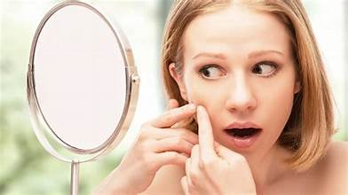
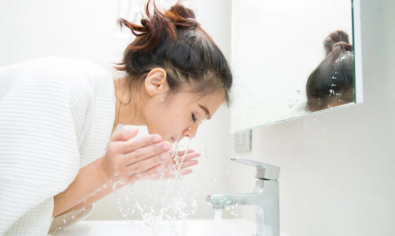

8 Rahasia Wanita agar Tampil Cantik Alami, Luar dan Dalam
Memiliki paras cantik alami tentu jadi idaman banyak orang. Anda bisa mewujudkan impian tersebut dengan melakukan perubahan gaya hidup yang bukan cuma menjaga kecantikan, melainkan juga menyehatkan tubuh.
Tips menjaga kesehatan agar penampilan cantik alamis
Kulit dan tubuh harus dirawat dengan baik bila Anda ingin tampil cantik alami tanpa perlu menggunakan berbagai jenis produk kecantikan. Jadi, Anda tak hanya cantik dari luar, tapi juga cantik dari dalam. Anda bisa melakukan beberapa cara menjadi cantik alami berikut untuk mewujudkannya.
1. Penuhi kebutuhan air putih
Memenuhi kebutuhan air putih setiap hari sangat penting untuk menjaga kesehatan kulit dan memastikan kulit tetap terhidrasi dengan baik. Hidrasi yang cukup membantu menjaga elastisitas kulit, mengurangi risiko kulit kering, dan membuat kulit bercahaya. Minum air putih yang cukup juga membantu menjaga tekstur kulit halus dan lembut. Ini membuat kulit terasa lebih kenyal dan menyamarkan tanda-tanda penuaan kulit, seperti garis-garis halus.
2. Batasi minum alkohol atau hindari sama sekali
Membatasi minum alkohol juga merupakan cara cantik alami. Hal ini karena alkohol dapat membuat tubuh dehidrasi sehingga menyebabkan kulit menjadi kering dan kusam.
Selain itu, konsumsi alkohol berlebihan dapat memicu peradangan dalam tubuh, yang dapat mempengaruhi kondisi kulit seperti jerawat atau kemerahan. Dampak alkohol untuk kulit wajah juga dapat merusak kolagen dan elastin dalam kulit. Kedua senyawa ini penting untuk menjaga kekenyalan dan kekuatan kulit.
3. Mengangkat kulit mati
Mengangkat sel kulit mati atau dikenal dengan istilah eksfoliasi kulit sangat penting
dilakukan secara teratur.
Prosedur ini bermanfaat untuk merangsang produksi sel-sel kulit baru sehingga dapat mengurangi tanda penuaan
kulit.
Melakukan eksfoliasi juga memungkinkan produk perawatan kulit seperti serum dan pelembap untuk menyerap
lebih baik ke dalam kulit sehingga manfaatnya optimal.
Selain itu, proses eksfoliasi meningkatkan peredaran darah ke permukaan kulit, yang dapat memberikan
tampilan kulit yang lebih sehat dan bercahaya.
4. Berhenti memencet jerawat

Jika Anda suka memencet dan memecahkan jerawat, stop kebiasaan ini mulai dari sekarang.
Memencet jerawat memang membuatnya segera hilang, tetapi cara ini bisa menimbulkan bekas luka yang sulit
dihilangkan.
Bekas jerawat ini bisa berupa bercak gelap, noda, atau bahkan jaringan parut yang permanen.
Memencet jerawat dapat menyebabkan infeksi bakteri karena memperkenalkan kuman dari tangan Anda ke dalam
pori-pori kulit yang terbuka.
5. Bersihkan makeup sebelum tidur

Membersihkan wajah sebelum tidur adalah cara cantik alami yang penting dalam menjaga kecantikan kulit. Selama sepanjang hari, kotoran, minyak, debu, dan sisa-sisa makeup dapat menumpuk di permukaan kulit. Membersihkan wajah sebelum tidur membantu menghilangkan kotoran, mencegah pori-pori tersumbat, serta mengurangi risiko jerawat dan komedo.
6. Olahraga secara teratur
Olahraga teratur memiliki banyak manfaat bagi kesehatan tubuh dan kulit sehingga bisa menjadi cara cantik alami. Saat berolahraga, denyut jantung dan aliran darah meningkat sehingga membantu menyuplai oksigen dan nutrisi ke seluruh tubuh, termasuk kulit. Manfaat olahraga untuk kulit juga meningkatkan proses detoksifikasi alami dengan mengeluarkan toksin melalui pori-pori kulit. Ini membantu membersihkan kulit dari dalam dan mencegah timbulnya jerawat dan masalah kulit lainnya.
7.Jangan keramas setiap hari
Keramas memang penting untuk menjaga kebersihan dan kecantikan rambut, tetapi sebaiknya jangan dilakukan setiap hari, ya. Mencuci rambut terlalu sering bisa menghilangkan minyak alami di kulit kepala. Minyak ini diperlukan untuk menjaga kelembapan serta kilau alami rambut. Untuk mendapatkan rambut yang cantik alami, sebaiknya keramas setiap dua hari sekali saja. Selain keramas, sebaiknya hindari styling rambut, seperti mencatok dan mengeringkan dengan hair dryer setiap hari.
8. Lindungi kulit dari paparan sinar matahari
Cara cantik alami yang harus dilakukan setiap hari yaitu menggunakan krim tabir surya alias
sunscreen. Hal ini penting untuk melindungi kulit dari efek buruk sinar UV.
Salah satu penelitian dalam jurnal Canadian Medical Association journal mengatakan bahwa paparan sinar
ultraviolet (UV) dari matahari dapat menyebabkan kerusakan kulit, termasuk penuaan dini, kanker kulit, dan
hiperpigmentasi.
Nah, solusinya yaitu menggunakan sunscreen sebelum bepergian ke luar rumah.
Kulit yang terlindungi dari sinar UV memiliki risiko yang lebih rendah untuk mengalami masalah kulit seperti
kemerahan, iritasi, atau alergi.
Kecantikan adalah sesuatu yang sangat subjektif dan artinya dapat berbeda-beda bagi setiap orang. Namun,
satu hal yang pasti adalah bahwa kulit yang sehat dapat meningkatkan kecantikan secara keseluruhan.
Selalu ingat bahwa kecantikan sejati berasal dari dalam, jadi penting untuk merawat diri dengan baik dan
menjaga kesehatan fisik dan mental Anda.